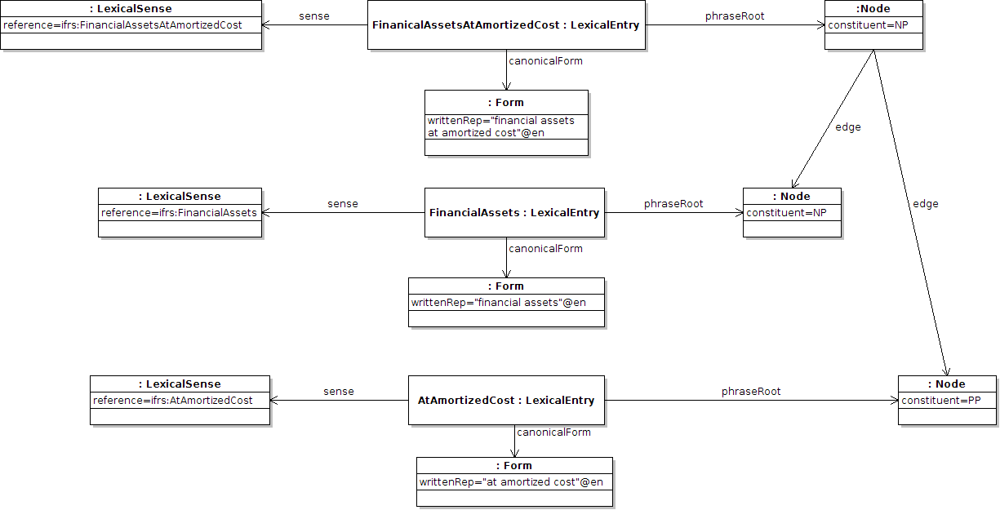

Next: Summary of vocabulary introduced Up: Phrase Structure Module Previous: Dependency relations Contents
It is often case that the full parse tree is not needed and only a section is required, for example the noun phrase chunks within the entry. This is modelled the same way as other phrase structure analyses in lemon, however such trees are not complete, i.e., they do not have leaf relations. An example of this is given for the phrase “Financial assets at amortized cost”, which is chunked into “[Finanical Assets] [at amortized cost]”:
:FinancialAssetsAtAmortizedCost a lemon:LexicalEntry ;
lemon:sense [
lemon:reference ifrs:FinancialAssetsAtAmortizedCost ] ;
lemon:canonicalForm [
lemon:writtenRep "finanical assets at amortized cost"@en ] ;
lemon:phraseRoot [
lemon:constituent :NP ;
lemon:edge :NPChunk , :PPChunk ] .
:FinancialAssets a lemon:LexicalEntry ;
lemon:sense [
lemon:reference ifrs:FinancialAssets ] ;
lemon:canonicalForm [
lemon:writtenRep "finanical assets"@en ] ;
lemon:phraseRoot :NPChunk .
:AtAmortizedCost a lemon:LexicalEntry ;
lemon:sense [
lemon:reference ifrs:ValueAtAmortizedCost ] ;
lemon:canonicalForm [
lemon:writtenRep "at amortized cost"@en ] ;
lemon:phraseRoot :PPChunk .
:NPChunk lemon:constituent :NP .
:PPChunk lemon:constituent :PP .
